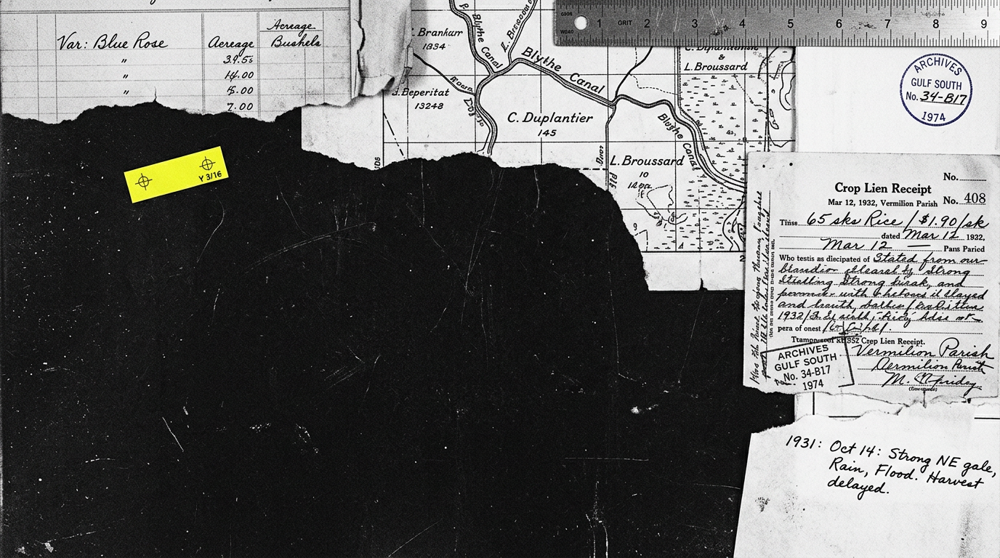
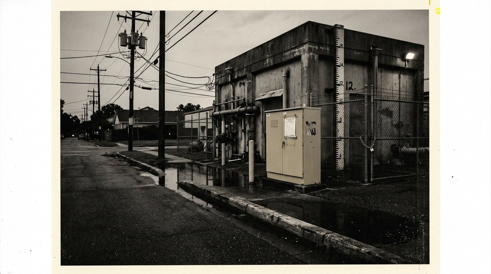
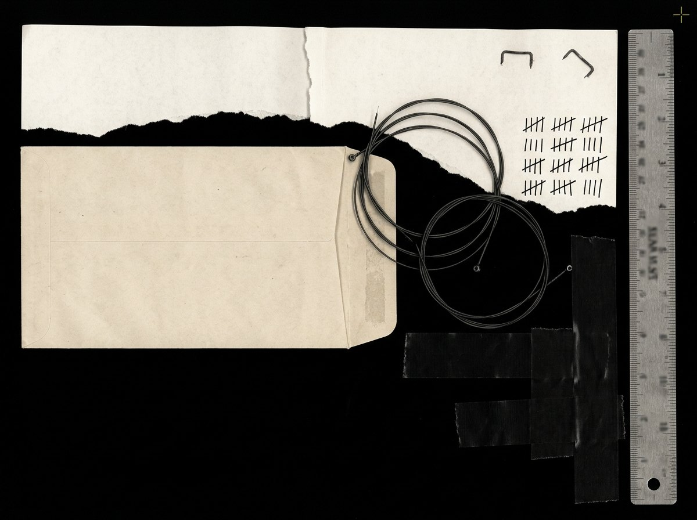

Archive



 Mill Ledger, 1911RC-ACD-1911-004 / Acadia Parish / Ledger
Mill Ledger, 1911RC-ACD-1911-004 / Acadia Parish / Ledger

Field at 19:42RC-FLD-2026-017 / Weather / Photograph
Damp Heat IndexRC-WTH-2026-009 / Survey / Chart
Shipper / Weight / GradeRC-ACD-1911-004B / Detail / Ledger